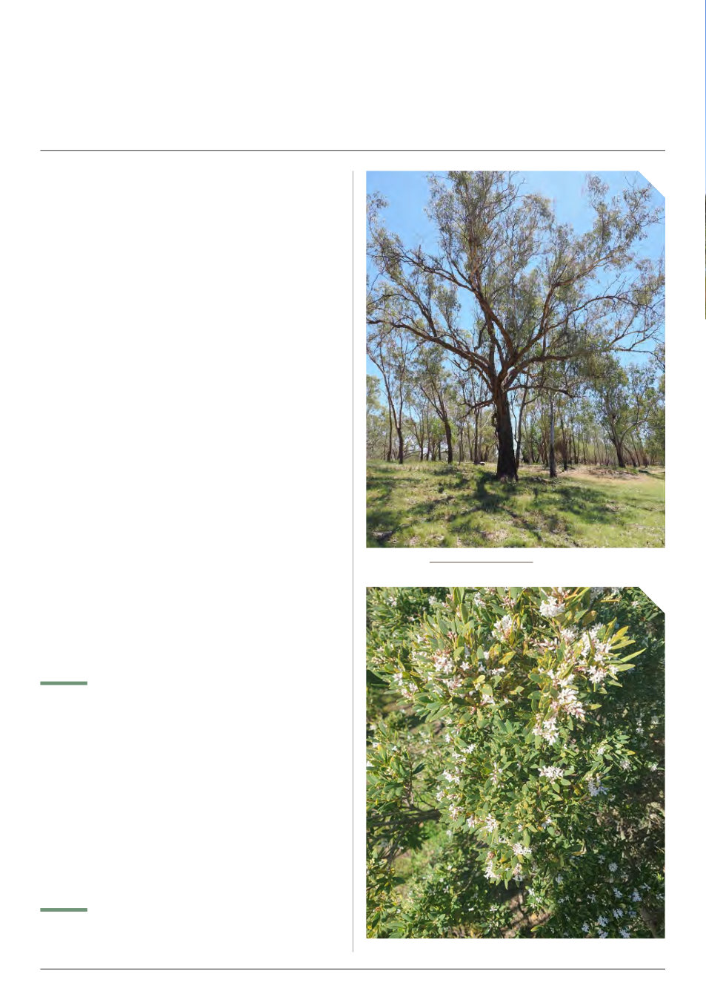

26 | Published since 1918 by the VAA – founded in 1892
Coolabah tree, by Lucas Christofides, iNaturalist
I have been away for 3 weeks visiting Queensland and
inland New South Wales. We visited friends in Toowoomba
and enjoyed having them show us around. I am amazed at
the huge area of fertile irrigated land in the Darling Downs
and Cecil Plains. The cotton harvest was just finished and
the rolls were being taken to the gins. Such large areas of
open flat cleared farmland would only support bees while
crops are flowering, they are devoid of any flowering plants.
Coolabah [Eucalyptus coolabah] trees on the hillsides looked
like they needed a drink – the area is in drought. Bimble box
[Eucalyptus populnea] with its shiny round leaves are everywhere.
I could not see budding in the northern areas. Towards Victoria,
yellow box [Eucalyptus melliodora] and some red gum [Eucalyptus
camaldulensis] could be seen. Around Nagambie the trees looked
the most promising.
Large areas of Canola are just starting to flower south of Parkes
all the way to southern Victoria. It was hard to see bees placed
on the crops. Many small Canola plants could be seen and should
flower later.
The new plantings of almonds near Numurkah looked
impressive but no flowers were to be seen. These orchards have
ventured upstream of the Barmah choke which restricts water flow
down to the Riverland area.
It is reported that the almond trees are late flowering this year.
Possibly three weeks later than usual. Concerns about hive strength
and enough good hives being available to pollinate the flowers.
Due to the heavy rains through central Victoria, beekeepers have
been having trouble loading their hives on boggy ground. Muddy
trucks have been seen arriving in the afternoon.
The amount of development in the rural towns is astounding,
especially where retirement villages are being built in towns with
rivers or lakes.
Locally, red box [Eucalyptus polyanthemos] has started to
flower but is unreliable unless we get warm weather. Eggs and
bacon is flowering with its striking orange flowers. Bees get a red
pollen from it and is very good for breeding bees.
18/8/2026 Along the coast the bearded heath [Leucopogon
parviflorus] and coastal teatree [Leptospermum laevigatum]
is starting to flower. Yellow gum [Eucalyptus leucoxylon] has
some trees white with flowers and most appear to have finished
flowering, but odd areas have a few trees with buds.
Sugar gums [Eucalyptus cladocalyx] have been forming small
buds and hopefully they will yield a good crop of honey next
summer. In the Western District many sugar gum plantations are
being cut down for firewood and posts. The banning of harvesting
timber from crown land has resulted in the wood cutters shifting
to farm trees.
Local canola crops are mostly commencing flowering 16/8/2026
although some earlier crops can be found and some much later
crops are still small. I am amazed how far bees fly to Canola; two
to three kilometres is no problem even when the temperature is
only 14 degrees.
30/8/2026 The bees on Canola crops are breeding with large
slabs of brood and many drones unhatched but the hive scales
show the hive weights have remained about the same without
John Edmonds’ Monthly Diary
August 2026
By John Edmonds
Coastal Beard-heath near Torquay, Victoria, by Kris Fricke